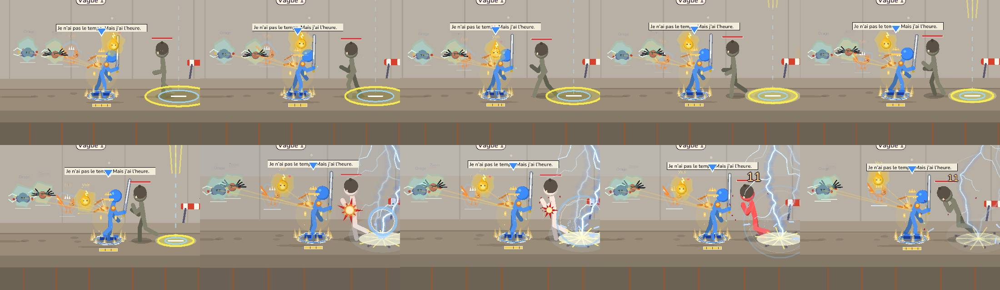
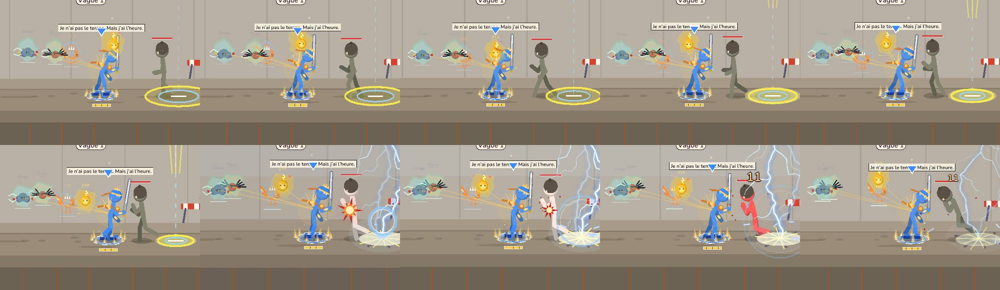
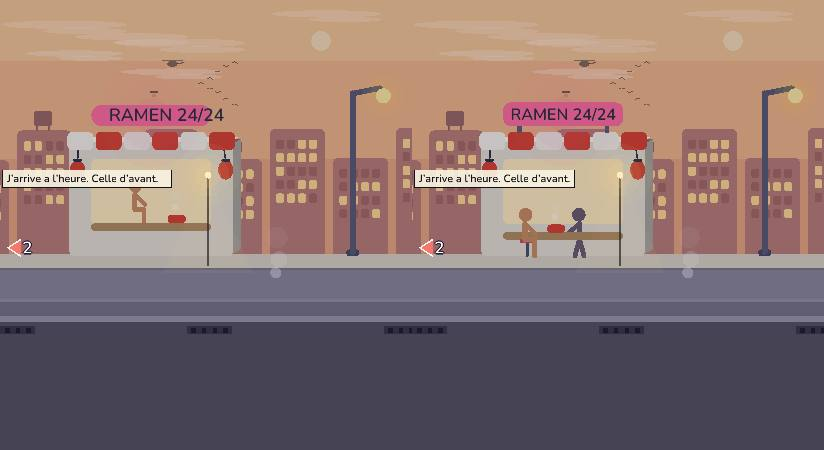
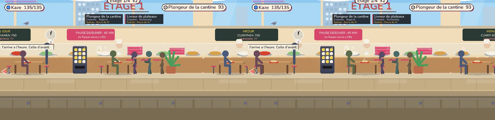
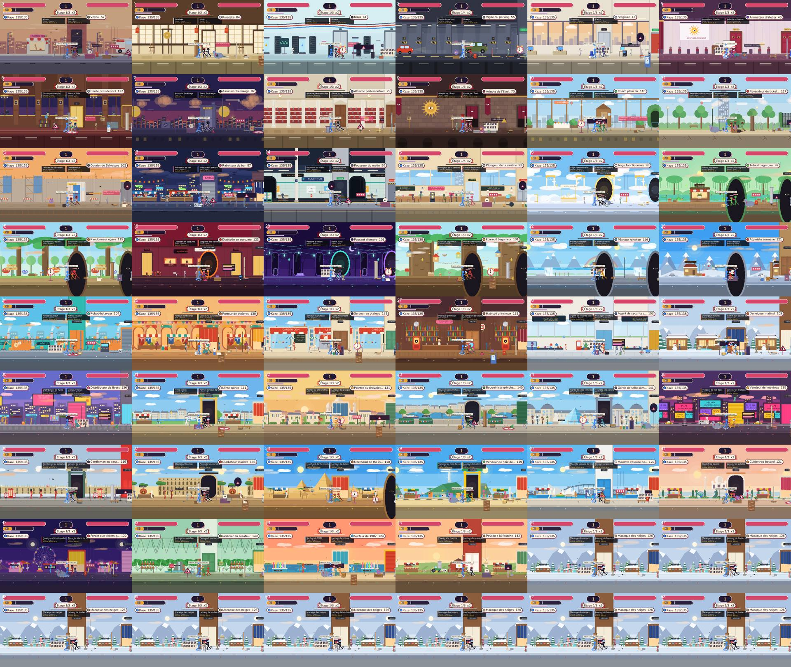
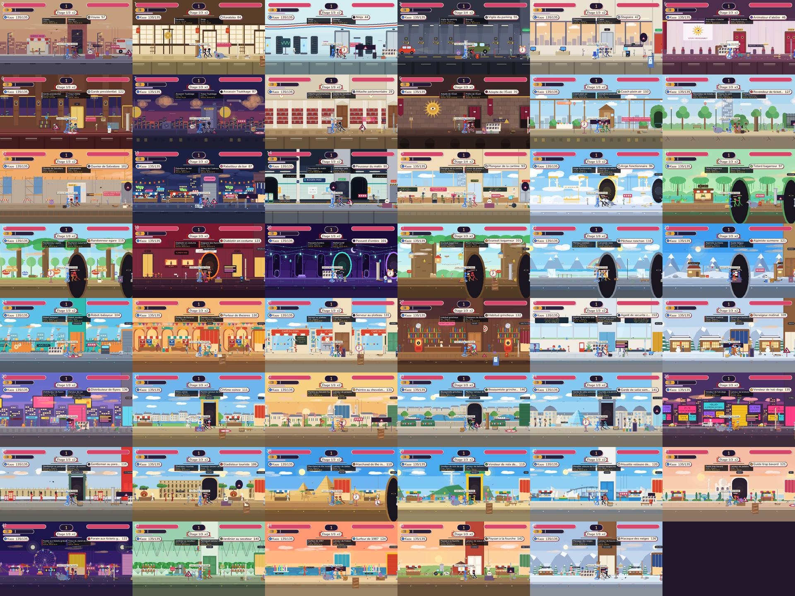
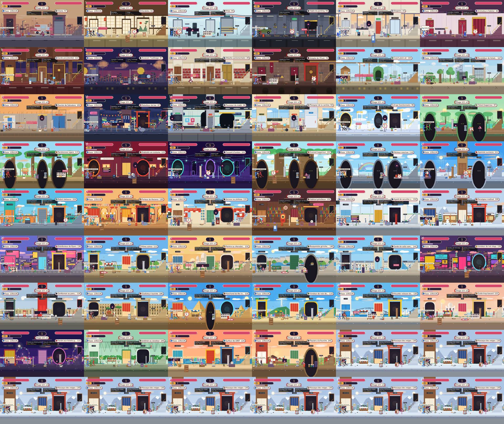
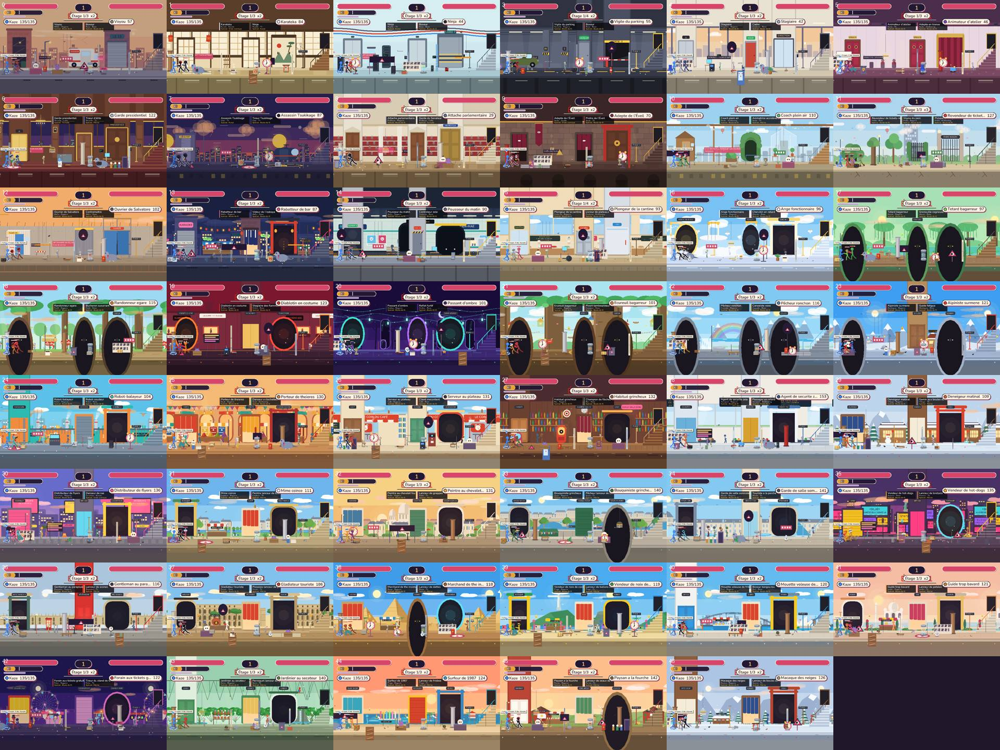

Rendu seulement : aucun changement de simulation, de hash ni de protocole. Journal : tools/playtest/equipement_decors.md.
Cause : les pièces portées de l'évolution du héros (épaulières, brassards, écharpe, bandeau, ailes, couronne, lueur des yeux : rl_look.rs) étaient dessinées à des décalages MONDE fixes autour des pieds, pas sur le squelette dessiné. Dès que le héros frappait, sautait ou se baissait, les disques gris restaient à hauteur de torse, loin des épaules et des poignets.
Correctif : chaque pièce porte maintenant un rattachement (épaule, tête, avant-bras, torse) ; la position écran = articulation du squelette réellement dessiné + décalage tourné comme le segment. Le rendu du corps publie ses articulations finales (après physique des membres, visée, tremblement) juste avant l'équipement.
Avant (disques fixes) :

Après (les pièces suivent épaules, tête et avant-bras, mêmes images) :

Causes : (a) view::text_w mesurait avec la police par défaut de macroquad alors que le texte est dessiné en Nunito (plus large de ~35 %) : tout texte centré était décalé et débordait de son cadre (famille : toutes les enseignes, étiquettes, bulles) ; (b) le client était posé sur du vide, pieds à 80 px du sol, sans siège.
Correctif : mesure avec txt::measure_text ; nouvelle enseigne B::sign (texte centré, réduit pour tenir dans son cadre) posée sur l'auvent par deux pieds ; client assis sur un tabouret visible, pieds au sol, tourné vers le bol ; cuisinier debout derrière le comptoir, tourné vers lui.

Cantine : les convives étaient assis sur le plateau de la table, les tabourets restaient vides à côté. Bureaux : collègues sans fauteuil. Les convives sont maintenant sur leur tabouret ; un fauteuil est dessiné aux bureaux.

Avant, moitié gauche :

Après, moitié gauche :

Avant, moitié droite :

Après, moitié droite :

coherence_guard.py : enseigne_hors_cadre (largeur Nunito mesurée du texte ≤ panneau, dur) et figurant_sans_siege (dur).rl_look::worn_pieces_follow_the_bones_over_a_series_of_poses, shoulder_pad_stays_on_the_shoulder, gear_shapes::every_piece_follows_its_joint_in_every_pose (position = os + décalage sur 6 à 7 poses, deux sens de regard).